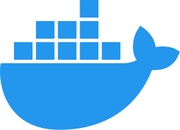
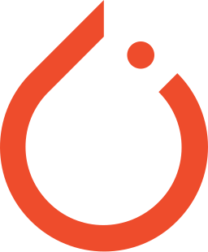

Skills & Expertise
Software Engineering
AI & Deep Learning
Database & DevOps
Machine & Deep Learning
Generative AI & Agents
Certificates
Technologies I Work With
 TypeScript / JS
TypeScript / JS

Docker Git
Git
 GitHub
GitHub
 Python
Python

PyTorch Hugging Face
Hugging Face
 NumPy
NumPy
 Pandas
Pandas
 Scikit-learn
Scikit-learn
 FastAPI
FastAPI
 C
C
Featured Projects
Jira Kanban Reporting Agent
An AI agent built at Türksat that reads the weekly Jira Kanban board (To Do / In Progress / Done), analyses task distribution and blockers, then generates a structured status report and automatically emails it to managers — fully automated without any manual input.
Internal ProjectKurumAsistan - Enterprise AI
A 3-layer AI orchestration architecture integrating RAG, Chat, and Tool Calling to minimize hallucinations. Implemented semantic search using pgvector inside PostgreSQL, real-time streaming with SSE, and RBAC security via Keycloak.
Internal ProjectOrbit Identity - IAM Platform
Developed a centralized IAM platform tracking 10,000+ Active Directory objects. Engineered a 3-tier hybrid caching strategy (PostgreSQL + RAM) to reduce LDAP query latency, and integrated a CDC Kafka-Logstash-Elasticsearch pipeline for auditing.
Internal ProjectROTAM - Service Tracking
Developed scalable RESTful APIs with Spring Boot for tracking and optimizing corporate shuttle services. Managed database migrations via Flyway, optimized DTOs with MapStruct, and secured the system with JWT/RBAC using Keycloak integration.
Internal ProjectLlama 3.1 Fine-Tuned ChatBot
Fine-tuned the LLaMA 3.1 8B model using over 17,000 Turkish QA pairs. Applied LoRA/QLoRA techniques to optimize memory usage by 60% during training while maintaining high conversation accuracy. The quantized model is published on Hugging Face.
Learn MoreTraffic Sign Recognition
Built a deep learning CNN model capable of classifying 43 different categories of German traffic signs. The model allows users to upload images for real-time predictions and is deployed as an interactive Streamlit web application on Hugging Face Spaces.
Learn MoreFashion Product Recommendation
The project is designed to recommend visually similar products based on an uploaded image. The model utilizes the ResNet50 architecture to extract image features and K-nearest neighbors to find the closest matches.
Learn MoreSentiment Analysis with NLP
This project focuses on analyzing customer reviews from Yelp and Twitter to identify ways to improve customer satisfaction using Natural Language Processing (NLP) techniques.
Learn MoreImage Classification Projects
CIFAR-10 Classification, Malaria Cell Detection, and Skin Cancer Detection — three CNN projects built with TensorFlow/Keras. The skin cancer model is published on Hugging Face Spaces.
Learn MoreCustomer Segmentation with RFM & KMeans
Assists businesses in creating targeted marketing strategies by segmenting customers using RFM (Recency, Frequency, Monetary) metrics and KMeans clustering, helping with personalized marketing and strategic decision-making.
Learn MoreAge & Generation Prediction
Estimates a person's age and generation (Millennial, Gen X, Boomer) using supervised ML on OKCupid user profiles. Covers data preprocessing, EDA, and model training with various machine learning algorithms.
Learn More